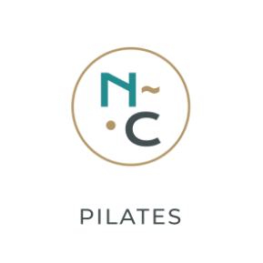
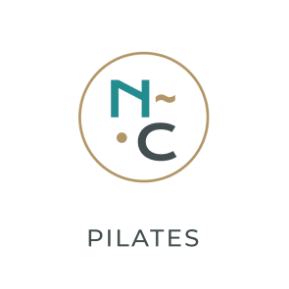

Actualmente me encuentro trabajando como UX - UI Designer Jr en Guilty.
Estoy capacitándome y realizando proyectos personales para mejorar mis
habilidades. Trabajé en mi propio emprendimiento realizando proyectos de
branding y social media. Me considero una persona curiosa, dedicada y con
continuas ganas de perfeccionarme y emprender nuevos desafíos.

Soy fan de sacar fotos.
Saco fotos 24/7.
Soy fan de Ed Sheeran.
Mi canción: Perfect.
Soy fan de los perros.
Wanda es mi compañera.
Soy fan de los libros.
Fav: El camino del artista.


 
